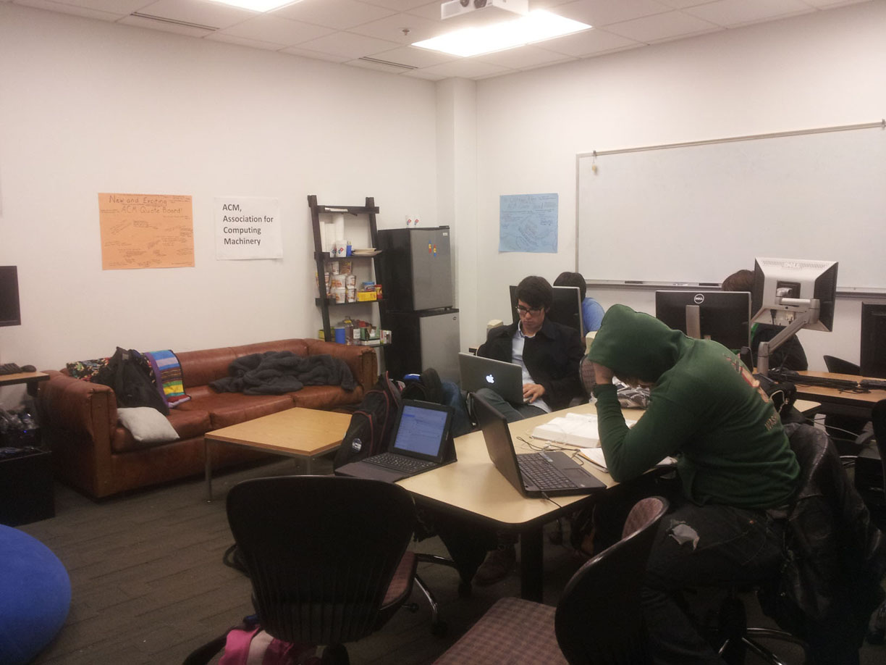
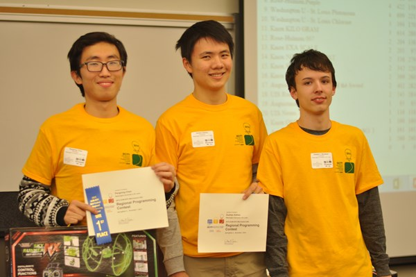
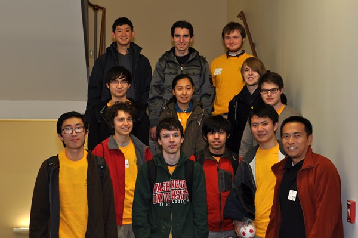

ACM hosts a variety of activities that are open to all. To get started, select an activity from the left (or top if you're browsing on mobile).
Above: the ACM lounge in Urbauer 114. It's a good place to hang out with people that know computers, and we have public gaming computers too!
Congratulations to ACM Team Iridium (Joey Woodson, Patrick Chao, and Zuohan Xiahou) winning first place at ICPC regionals!
Good job to everybody who participated!
Each November, ACM sends teams to compete in the International Collegiate Programming Contest (ICPC). To help prepare for this undertaking, we have Code and Cookies, a small preparation course that takes place on Fridays from 11:30 - 1:00 in Urbauer 214. As the name suggests, you get helpful tips on coding and algorithms, AND get cookies! What's not to like?
This is an example of the kind of problem that might appear in a programming contest:
Credit: Skiena & Revilla - Programming Challenges, Chapter 6
Recall the definition of the Fibonacci numbers:
f1 = 1
f2 = 2
f3 = fn-1 + fn-2
Given two numbers a and b, calculate how many Fibonacci numbers are in the range [a,b].
The input contains several test cases. Each test case consists of two non-negative integer numbers a and b. Input is terminated by a=b=0. Otherwise, a<=b<=10100. The numbers a and b are given with no superfluous leading zeros.
For each test case output on a single line the number of Fibonacci numbers fi with a<=fi<=b.
10 100
1234567890 9876543210
0 0
5
4
Usual Time: Thursdays, 6:30 pm
Usual Location: Gregg Technology Classroom
Each Thursday, ACM hosts a talk or activity related to computing or the tech industry. And not only that, we feed you too!
Examples of talks that we have done in the past:
All office hours are held in the ACM lounge
Are your computer science classes driving you crazy? Want to find your TAs and professor, but they are never available at a convenient time? Come to ACM office hours!
All our TAs are knowledgable in all the lower level computer science courses:
Many are skilled at higher level courses too - check the schedule!
Finding a job can be hard, especially if you have little "real world", out of class experience. Tech companies will ask interviewees about the personal projects they have done. Don't have one? Have no fear - ACM will help you find one!
So you have a personal project? That's awesome! We'll pair you with those that want something to work on - namely, the "I need a project" people.
If any of these apply to you, contact us at acm@wustl.edu.